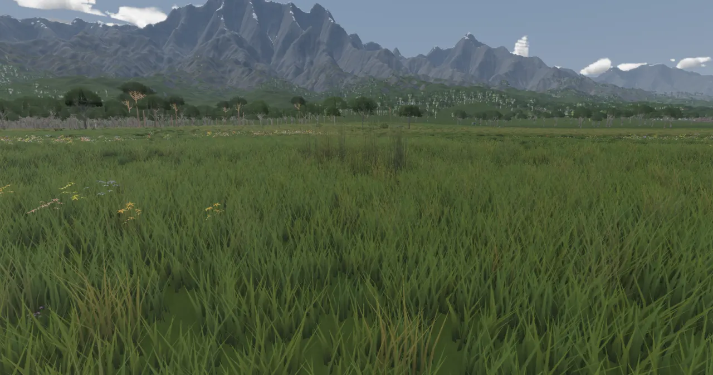
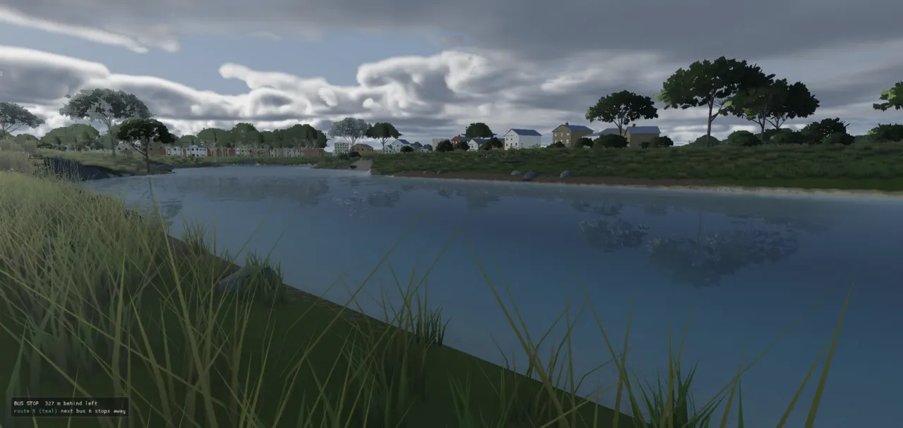
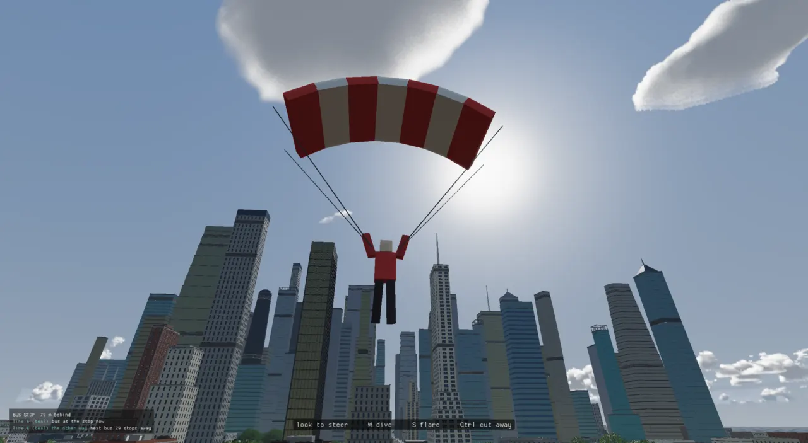

Sound made from nothing
The engine ships no sound files. Every footstep, engine note, river, train horn and grapple hook is
synthesized at start-up by a small pure function, (parameters, seed) → PCM, and played through
miniaudio sealed behind one class. What makes it sound right is not the samples but the rules that pick a sound:
which ground is under the foot, how fast the car is going, what walls stand between you and the horn.
The problem
A game that generates its world also has to make that world audible: a city of tens of thousands of cars, an island with beaches, rivers and mountain rock, a player who walks, swims, skates and swings. Shipping a sample for each case means a sound library, licences, and sounds that do not match what is actually happening (a recorded footstep does not know whether the grass is mown). The engine's design principle is "procgen first", so audio follows the mesh builders: a sound is a recipe, deterministic from a seed, and testable without speakers.
The hard parts turned out to be perceptual, not technical. Most of this page's history is Glenn listening and saying what he heard ("spindly legs", "a pot of boiling water", "sounds like the sea"), and the code being changed, or measured against a real recording, until the sound matched the thing.
The instrument: AudioEngine (ADR-0069)
miniaudio (a single-header C library, public domain / MIT-0) is the mixer and device layer. It is sealed
behind engine::AudioEngine — no ma_* type appears in the header — the same way
PhysicsWorld seals Jolt. The decisive reason for miniaudio was that it runs without a device:
in Manual mode the caller pumps the mix into a buffer, so tests assert real pan, attenuation and loop
behaviour on rendered frames; Auto falls back to a silent null device on a headless machine, so boot
never fails.
| Concept | What it is |
|---|---|
| clip | decoded PCM shared by voices. createClip(frames, …) is the procedural path; loadClip(path) exists but nothing uses a file |
| voice | one playing instance. play (2D, panned) or playAt(clip, position, range) (3D). Handles are generational, so a stale handle reports "not playing", never a newer voice |
| bus | Sfx, Music, Ambient, each with a volume under the master |
PlaySound | a fire-and-forget cue on the EventBus: any system can ask for a sound without knowing audio exists |
The ECS side is AudioSystem: it moves the listener with the camera (or an AudioListener
entity), plays PlaySound cues, and keeps a name → clip table so procedural clips are addressed like
files ("sfx/impact"). RT_ENABLE_AUDIO=OFF compiles an inert stub with the same API, which
is how the web build goes without miniaudio.
The reaction chain: contact to sound (ADR-0071)
The first real use wired the whole chain once, as the pattern every later reaction reuses: physics notices something happened, the event bus carries it, and a game-layer system decides what it sounds like.
The reaction chain. Policy (which clip, what threshold) lives in the game layer, not in an engine system.
#ifdef RT_ENABLE_PHYSICS EventBus* events = &ctx.events; collisionSub = ctx.events.subscribe<Collision>( [events](const Collision& hit) { // Gentle/resting touches stay silent; harder hits get louder // and slightly brighter. The cue is deferred to the frame // dispatch like every other reaction. if (hit.speed < 2.0) return; PlaySound cue; cue.clip = "sfx/impact"; cue.spatial = true; cue.position = hit.position; cue.range = 45.0; double severity = std::min(hit.speed / 14.0, 1.0); cue.volume = static_cast<float>(0.25 + 0.75 * severity); cue.pitch = static_cast<float>(0.85 + 0.35 * severity); events->enqueue(cue); });
Only OnContactAdded is recorded, so a resting pile does not spam events; Jolt calls it on worker
threads mid-step, so contacts are buffered under a mutex and drained on the main thread after the step. Later
systems (footsteps, vehicles, trains) do not go through the bus: they own their clips and call
playAt directly, because they already know exactly what happened. The bus is for "something
happened, whoever cares".
A sound is a recipe
Every generator in engine::sfx has the same shape: parameters and a seed in, mono float32 in
[-1, 1] out, the same bytes for the same seed. Different seeds vary pitch and texture, so a walk is never the same
step twice and forty cars on a street are not one chord. They run once when a system starts — the footstep system
makes its whole bank (10 grounds × several variants, jumps, three landing weights, swishes, splashes) and logs
how long it took; the first version reported 73 clips in about 150 ms (8b411ac0).
The building blocks are few, and live in sfx_dsp.h: one-pole low/high/band-pass filters specified
in Hz (so a recipe sounds the same at any device rate), peak normalising, and the trick that makes loops
seamless.
// Circular box filter and helpers for the LOOPS (same trick as sfx::engine: wrapped windows make the // filtered noise exactly periodic, so the seam is just another sample). inline std::vector<double> circBox(const std::vector<double>& in, int window) { const auto n = static_cast<int>(in.size()); const int half = std::max(1, std::min(window / 2, n / 2 - 1)); std::vector<double> out(in.size()); double sum = 0.0; for (int k = -half; k <= half; k++) sum += in[static_cast<size_t>(((k % n) + n) % n)]; const double norm = 1.0 / (2 * half + 1); for (int i = 0; i < n; i++) { out[static_cast<size_t>(i)] = sum * norm; sum += in[static_cast<size_t>((i + half + 1) % n)] - in[static_cast<size_t>(((i - half) % n + n) % n)]; } return out; }
A looping ambience (surf, river, wind, an engine) must end exactly where it begins, or every loop clicks. An
ordinary filter has state that carries forward, so the last sample's filtered value does not match the first's.
Wrapping the window round the buffer makes the result periodic by construction; envelopes are built from sines with
a whole number of cycles per loop (circEnvelope) for the same reason. The test
ambience_loops_are_seamless_and_audible checks every loop's seam.
Footsteps: how a step is chosen
Footsteps (issues #62–#65, commit 8b411ac0) are the best example of the "rules pick the sound" idea. Three questions are answered every fixed step: is this a step, a jump or a landing?, what is under the foot?, and which variant?
How a footstep is chosen, in FootstepSystem::fixedUpdate (src/engine/systems/footstep_system.cpp)
with the pure logic in audio/footsteps.h.
The ground tag is set where the collider is made. A road mesh is named by its material, and the loader maps names to surfaces with the same names its renderer uses:
// What a road mesh is underfoot (footsteps, engine/audio/footsteps.h), by the same names. static ColliderSurface colliderSurfaceForRoadMaterial(const std::string& name) { if (name == "asphalt" || name == "shoulder") return ColliderSurface::Asphalt; if (name == "concrete" || name == "sidewalk") return ColliderSurface::Concrete; if (name == "terrain") return ColliderSurface::Terrain; if (name == "guardrail" || name == "station_steel") return ColliderSurface::Metal; if (name == "ballast") return ColliderSurface::Rock; if (name == "platform") return ColliderSurface::Concrete; if (name.find("median") != std::string::npos || name.find("grass") != std::string::npos) return ColliderSurface::Grass; return ColliderSurface::Unknown; }
Terrain is one big collider, so its tag only says "terrain"; the actual ground is read from the ground-cover map — the same map that colours the terrain and plants its grass — at the foot, with the real slope:
sfx::Ground FootstepSystem::groundAt(World& world, uint8_t surface, double x, double y, double z, double* slopeCos) { if (slopeCos) *slopeCos = 1.0; if (surface != static_cast<uint8_t>(ColliderSurface::Terrain)) return groundForSurface(surface, false, 0, 0, 0, 0, 0); const TerrainLodConfig* cfg = nullptr; world.each<TerrainLodConfig>([&](Entity, TerrainLodConfig& c) { if (!cfg) cfg = &c; }); if (!cfg || !cfg->params.cover) return groundForSurface(surface, false, 0, 0, 0, 0, 0); // the slope the cover judges rock by, from the ground a step either side const double e = 1.0; const double hx0 = groundHeight(*cfg, x - e, z), hx1 = groundHeight(*cfg, x + e, z); const double hz0 = groundHeight(*cfg, x, z - e), hz1 = groundHeight(*cfg, x, z + e); const Vec3 n = normalize(Vec3(-(hx1 - hx0) / (2 * e), 1.0, -(hz1 - hz0) / (2 * e))); if (slopeCos) *slopeCos = n.y; const Cover c = cfg->params.cover->at(x, z, y, n.y, n.x, n.z); return groundForSurface(surface, true, c.grass, c.dirt, c.sand, c.rock, c.snow); }
Why the real slope. Play-testing found a rock face playing the grass rustle (#85): the grass field was asked as if the ground were flat, and the grass field thins grass on slopes, so a cliff read as a meadow. The fix asks with the real slope, and only plays grass where the ground under the foot is grass or dirt. Two other early bugs are visible in the tracker: pace is measured from where the feet actually moved (pushing into a wall asks for walking speed while going nowhere), and the stride grows with speed — at first it capped at 1.1 m, so running at 6 m/s made 5.5 steps a second and "the footsteps feel sped up" (#98). A runner takes about three.
The layers of a footstep recipe
Every ground is one Recipe rendered by one function. The recipe is a list of levels, bands and
decay times for a handful of layers that are added together:
The layers, drawn by hand to show their shape, not measured. Which layers a ground uses, and their bands and
decays, are the numbers in recipeFor. Hard grounds (asphalt, concrete, rock, wood, metal) are two
contacts, heel then toe; soft grounds (grass, dirt, sand, snow) are one rolled contact carried by texture or grains.
struct Recipe { double length = 0.25; // heel: a click of band-limited noise at contact double clickLevel = 0, clickLo = 1000, clickHi = 6000, clickDecay = 0.003; // ring: a damped sinusoid pair at the contact (the shoe and the surface ringing together) double ringLevel = 0, ringHz = 1500, ringHz2 = 0, ringDecay = 0.006; // toe: the same click + ring again, `toeDelay` later at `toeLevel` of the heel (0 = one contact) double toeDelay = 0, toeLevel = 0; // body: a low sine thump (the weight arriving) double thumpLevel = 0, thumpHz = 90, thumpDecay = 0.03; // texture: continuous noise through a band, shaped by attack/decay double texLevel = 0, texLo = 1500, texHi = 6000, texAttack = 0.002, texDecay = 0.04; // grains: discrete micro-impacts (gravel, snow crystals, grass stems) at `grainRate` per second // over `grainSpan`, each a tiny ringing click in the band double grainLevel = 0, grainRate = 0, grainSpan = 0, grainLo = 2000, grainHi = 8000; // dull: a steep extra low-pass (Hz, three poles) on the click and texture -- a one-pole band leaks too much top // for a soft sole; the toe also gets its own share of the thump double dull = 0; // grainDull: the same three-pole low-pass on the grains (Hz; 0 = none) -- grit under a boot, not glass beads double grainDull = 0; };
Jumps and landings reuse the same recipe through the renderer's knobs rather than separate recipes: a push-off is
the recipe shorter, with little weight and a scrape in the surface's own band; a landing stretches it by up to 2.2×,
multiplies the thump by up to 3.6 and lowers its pitch, with heel and toe arriving together (flat-footed). Three
landing weights are pre-made per ground and the tracker's heavy picks one.
"Spindly legs": measuring against a real recording. The first recipes were tuned by
ear and built mostly from noise, so every surface read as grass (#84); hard grounds became a heel and a toe
(gate hard_ground_steps_are_a_heel_and_a_toe: two onsets 78–92 ms apart). Glenn still heard "some weird
creature walking on spindly long legs like a spider". On 2026-10-02 (b78e1749) the pavement steps were measured
against a CC0 recording of shoes on concrete (Kenney "Impact Sounds", used to measure, not shipped; listed in
CREDITS.md): one impact ~20 ms, energy centred at 160–360 Hz, about 2% over 1.25 kHz. Ours centred at 2.7–4.8 kHz
and rang 85 ms: four octaves too bright. Hence the dull three-pole low-pass and the thump an octave up.
A week later (b58f529b, "the mountain terrain still has that spindly walking noise") the natural grounds got the
same treatment against the Kenney grass and snow steps: rock had been centred at 5.8 kHz, grass 9.4, snow 9.9; now
100–530 Hz. Gates: a_pavement_step_is_a_low_thud, steps_off_the_pavement_are_low_too.

From a rustle loop to a swish per stride. The first grass sound was a 2 s loop
whose level followed grass density × pace. Walking on the city's grass was "a constant low roar": the loop played
on mown lawns too (nothing asked how tall the grass was), and its per-stem flicker was a 25 ms average of noise,
which averages out to a steady hiss. Now the grass field carries its blade height, and each step through tall grass
plays a 0.42 s one-shot (sfx::grassSwish) that swells and dies, stems ticking off the leg (ddca9d6d).
Water: surf, rivers, and Minnaert bubbles
WaterAmbienceSystem keeps a surf voice at the nearest open-sea cell (a Sea component from
the loader's water cells; basin ponds are dropped, because river channels are carved below sea level and are not
sea) and a river voice at the nearest bank. Both are positional loops that glide as you move.
The river is where the most listening happened (#87, eight rounds on 2026-09-28). It began as physics. An air bubble in water rings at its Minnaert resonance, a frequency set by its radius: about 3.26 / r Hz for r in metres, so a 7.5 mm bubble rings near 435 Hz and a 25 mm one near 130 Hz. A babbling brook is many such bubbles. The generator draws radii from a power law (many small, few large), rings each one with a real bubble's damping and a slight upward chirp, and scatters them in bursts:
for (double tb = gap(rng); tb < seconds; tb += gap(rng)) { const int n = std::max(1, nOf(rng)); const double burstAmp = 0.5 + 0.5 * u01(rng); for (int b = 0; b < n; ++b) { const double a = -1.5, u = u01(rng); const double r = std::pow(std::pow(rMin, a) + u * (std::pow(rMax, a) - std::pow(rMin, a)), 1.0 / a); const double f0 = 3.26 / r; const double d = 0.043 * f0 + 0.0014 * std::pow(f0, 1.5); const double amp = burstAmp * std::sqrt(r / rMax) * (0.5 + 0.5 * u01(rng)); const double rise = 0.12 * d; const size_t start = static_cast<size_t>((tb + 0.08 * u01(rng)) * rate) % count; const size_t len = static_cast<size_t>(std::min(0.15, 6.0 / d) * rate); double phase = 0; for (size_t k = 0; k < len; ++k) { const double t = static_cast<double>(k) / rate; // a soft onset (~2 ms): a bubble swells into its ring, it doesn't click const double on = std::min(1.0, t / 0.002); phase += 6.283185307179586 * f0 * (1.0 + rise * t) / rate; acc[(start + k) % count] += amp * on * std::sin(phase) * std::exp(-d * t); } } }
The damping term (0.043 f + 0.0014 f1.5) is van den Doel's, per the commit that introduced it
(2f208512). Note % count on the write index: a bubble that runs past the end wraps to the start, so the
loop is seamless.

Eight rounds by ear, and where the bubbles ended up. In order, from the commits:
Minnaert bubbles (2f208512) — "sounds like a pot of boiling water", which is what an even rain of small independent
bubbles is; gurgle bursts over a rushing wash (36b99ead) — "too intense … very hissy and gluggy"; calmer,
darker, fewer bubbles (de7aaa87); three layers of bubbles over a faint bed (f6c916b3) — "too much static"; big low
bubbles, 7–25 mm (419c8654) — "works good for underwater … above water it wouldn't sound so muffled"; so the muffled
version became sfx::underwaterRiver, heard while the camera is under water (b01ab1c4); the in-air
bubbling then "sounds like something cooking … maybe it should just be a low static noise" (4ad7ab02). The river
you hear in the air today is a dark, steady band of noise (60–700 Hz for a wide river, thinner and quieter for a
narrow one; fd7b5fea). The bubbles were kept: as the underwater sound, as sfx::simmer (a pot, not yet
placed in a level), and as the droplets in a splash. The lesson the memory notes keep: when tuning stalls, ask for
a reference recording and measure it.
Hearing at a distance (2026-10-16)
Glenn: "The train horn sounds the same inside a building and pretty much anywhere you are in the world." Spatial
voices had been a straight line from full volume to silence at their range, so a 600 m horn was still at half volume
300 m away. Commit cd1c382f made AudioEngine do three things itself: the free-field law, air absorption,
and walls.
inline Real audioRefDistance(Real range) { return std::max(Real(2), range * Real(0.05)); } inline float audioDistanceGain(Real d, Real ref, Real range) { if (ref <= 0) ref = audioRefDistance(range); if (d >= range) return 0.0f; Real g = d <= ref ? Real(1) : ref / d; const Real fadeFrom = range * (Real(2) / Real(3)); if (d > fadeFrom) { const Real t = (range - d) / (range - fadeFrom); // 1 at the fade's start, 0 at range g *= t * t * (Real(3) - Real(2) * t); } return static_cast<float>(g); } // AIR ABSORPTION: air soaks up the high end with distance (a horn a few hundred metres off is a dull note, // not a bright one). The cutoff of the low-pass a voice is heard through at distance d. inline float audioAirCutoffHz(Real d) { return static_cast<float>(Real(20000) / (Real(1) + std::max(Real(0), d) / Real(120))); }
Computed from the formula above, not measured. Before the change, a voice fell linearly to silence at its range.
Walls and cabins. The engine asks an enclosure query which enclosure a point is in — for the city,
a lookup in the building records — and the listener can ride in a cabin (the player's car, a bus or cab, a
train car), renewed every frame. A sound from another enclosure crosses both barriers: a building wall is −18 dB
with a 600 Hz low-pass, a cabin −10 dB at 1.5 kHz, eased over 0.1 s so stepping through a door does not click. One
pitfall is recorded in the commit: miniaudio's ma_attenuation_model_none skips the spatializer outright,
pan and volume too, so the engine keeps an inverse model with zero rolloff and applies its own gain. Test:
walls_muffle_the_street_and_a_cabin_keeps_its_own_engine.
Vehicles: one engine sample, every car
Glenn asked for engine noise when moving vs idling, for the player's car and for all the city's traffic
(c374870c). The design copies the lamps': one pure decision core in engine/vehicle_audio.h maps
(speed, throttle, running) to a pitch and a gain; the player's VehicleSystem and the city's
CityTrafficAudioSystem are thin adapters, so both rev alike. The sound is one loop-clean period
from sfx::engine, pitch-shifted per car — no sample bank.
// Revs as a fraction of redline, from road speed alone. inline Real engineRevFraction(Real speedMps) { const Real v = std::fabs(speedMps); int gear = kEngineGearCount - 1; for (int g = 0; g < kEngineGearCount; ++g) { if (v < kEngineGearTops[g]) { gear = g; break; } } const Real low = gear == 0 ? Real(0) : kEngineGearTops[gear - 1]; const Real span = std::max(Real(0.1), kEngineGearTops[gear] - low); const Real through = std::min(Real(1), (v - low) / span); const Real geared = kEngineGearLowRev + (kEngineRedlineRev - kEngineGearLowRev) * through; if (v >= kEngineCreepSpeed) return geared; // Creep: idle -> the bottom of first gear. const Real t = std::max(Real(0), v) / kEngineCreepSpeed; return kEngineIdleRev + (geared - kEngineIdleRev) * t; }
The rev sawtooth. Without the gears, Glenn's word for it would have been a siren chasing the speedometer.
A drone is not an engine. The first sfx::engine was a stack of steady
sines, which Glenn correctly heard as "a constant hum". An engine is a train of combustion pulses, no two
alike, over broadband induction noise. The clip became a pressure pulse per firing with per-firing gain varying
74–126%, two circularly filtered noise beds, and a period grown from 0.25 to 0.75 s (42 firings) so the wrap stops
being audible. On top, engineWobble hunts the revs with two incommensurate sine rates phased by car id,
because "forty cars holding one exact note is a chord, not a street". A driverless parked car is silent, so a
parked street sounds different from traffic waiting at a light. Voices were budgeted in pools, nearest first (6
physical cars + 8 city cars at the time of c374870c).
Later additions follow the same pattern: the player's tyres squeal from a 12° slide or 0.2 wheel slip (ADR-0238;
it was 7° and 0.8 volume on the first day, then turned down), and a bicycle (pedals = true) has no
engine note at all — a freewheel ticking 24 clicks per wheel turn while it coasts, and the tyres' hum.
Trains (ADR-0156)
"There's no sound on the train. No train track clacking. No whistle or bell when it stops or when the doors open." The answer is four clips and some arithmetic on the train's odometer. Rail has joints every 18 m (jointed track, the clatter people expect); each axle near the ear clacks as it crosses one, so a car's two bogies give the "ta-dum … ta-dum" and the beat quickens with speed on its own.
// CLATTER: axles (two per bogie, 2.5 m apart; bogies at 0.18 and 0.82 of each body) past a joint since last frame if (E.lastOdo >= 0 && T.odometer > E.lastOdo && nearD < kClackRange + 30) { const double speed = std::min(1.0, T.v / 25.0); double front = 0; // metres behind the head for (int c = 0; c < static_cast<int>(cars.size()); ++c) { const double len = cars[static_cast<std::size_t>(c)].length; for (double b : {0.18, 0.82}) for (double ax : {-1.25, 1.25}) { const double off = front + b * len + ax; if (std::floor((T.odometer - off) / kJointSpacing) <= std::floor((E.lastOdo - off) / kJointSpacing)) continue; const Vec3 at = L.at(T.s - off); if ((at - ear).length() > kClackRange) continue; pp.volume = static_cast<float>(0.25 + 0.6 * speed); pp.pitch = static_cast<float>(0.92 + 0.16 * speed); ctx.audio.playAt(clack_[static_cast<std::size_t>(c + (ax > 0 ? 1 : 0)) % 3], Vec3(at.x, at.y + 0.5, at.z), static_cast<float>(kClackRange), pp); } front += len + T.kind.gap; } }
Under the clatter, railRumble loops on the nearest car with gain and pitch by speed; trainHorn
(high then low) sounds once about 300 m before each platform, heard to 600 m; trainDoorChime plays a
falling ding-dong as the doors open and three beeps a little before they shut. Aboard, all of it is heard through
the car's body as a cabin.

The body's moves (ADR-0238, ADR-0239)
"I think different sfx would help sell these types of motions too. Like skateboarding, parachuting, grapple, etc."
sfx_motion.cpp adds loops — wind by airspeed in every airborne mode, the canopy's flutter (about 9
flaps a second) and the wingsuit's buzz (about 24), the grapple's winch, a skateboard's roll — and one-shots: the
canopy opening (rustle, WHUMP, lines snapping taut), the hook's shot and bite, the rope snapping taut, a board's
trucks over pavement joints every 1.6 m, the ollie's pop and landing, and hands catching a hold
(handGrab, handHold, metalGrab on a rung). The player's pose carries counters
for the one-shots, and MotionAudioSystem plays them; FootstepSystem stays silent in those
modes, so the two never double up.

Elevators have their own set too (Glenn, 2026-09-30: "a ding when it reaches the floor, noise when it opens,
clicking when selecting a floor and then a noise showing that it's moving"): elevatorDing rising or
falling by direction, elevatorButton, elevatorDoors, and the elevatorHum loop.
Testing sound without ears
Every generator is checked headless in tests/test_audio.cpp: deterministic for a seed and different
across seeds, bounded in [-1, 1], loops seamless at the wrap, and — the interesting part — perceptual gates
computed from the samples: a pavement step's spectral centroid and share of energy over 1.25 kHz, two onsets
78–92 ms apart for heel and toe, a broad river with more low-band energy than a stream, a far horn quiet and
dull. The whole engine-note chain is pumped through the real mixer in Manual mode, where pitching up must raise the
zero-crossing rate. To actually listen:
| Switch | Effect |
|---|---|
RT_SFX_DUMP=<dir> | run_tests writes every tested clip as a 16-bit WAV into the folder |
RT_FOOTSTEP_LOG=1 | log every step, jump and landing: the ground, the surface tag, position, volume, grass level |
RT_WATER_LOG=1 | where each water voice sits, twice a second |
RT_AUDIO=null | run the mixer on the null device (probe viewers stay silent) |
RT_SFX_DUMP and open them in any editor.Where to look
- src/engine/audio/audio_engine.h / .cpp — the sealed mixer: clips, voices, distance, air, enclosures
- src/engine/audio/sfx.h — every generator's signature and a line on what it sounds like
- sfx.cpp (gunshot, impact, horn, engine, elevators, trains), sfx_ground.cpp (steps, grass, water), sfx_motion.cpp (moves, tyres, hands), sfx_dsp.h (shared filters, circular loops)
- src/engine/audio/footsteps.h — FootstepTracker and groundForSurface (pure, tested)
- src/engine/systems/footstep_system.cpp, water_ambience_system.cpp, motion_audio_system.cpp, audio_system.cpp
- src/engine/vehicle_audio.h — the engine-note decision core; src/apps/citysim/city_traffic_audio.cpp — the city's cars
- src/apps/citysim/train_system.cpp — clatter, rumble, horn, chimes
- src/engine/systems/physics_system.cpp (
publishContacts), src/game/arena_state.cpp (ArenaSoundSystem) - Tests: tests/test_audio.cpp, tests/test_vehicle_audio.cpp; tools/audio_demo.cpp, tools/impact_demo.cpp (renders the reaction chain to a WAV)
- CREDITS.md — miniaudio, and the Kenney recordings the footsteps were measured against
- Good test beds: river_valley's spawn (a rock face, then sand into the sea with surf on), a river bank, river_town's roads at a run